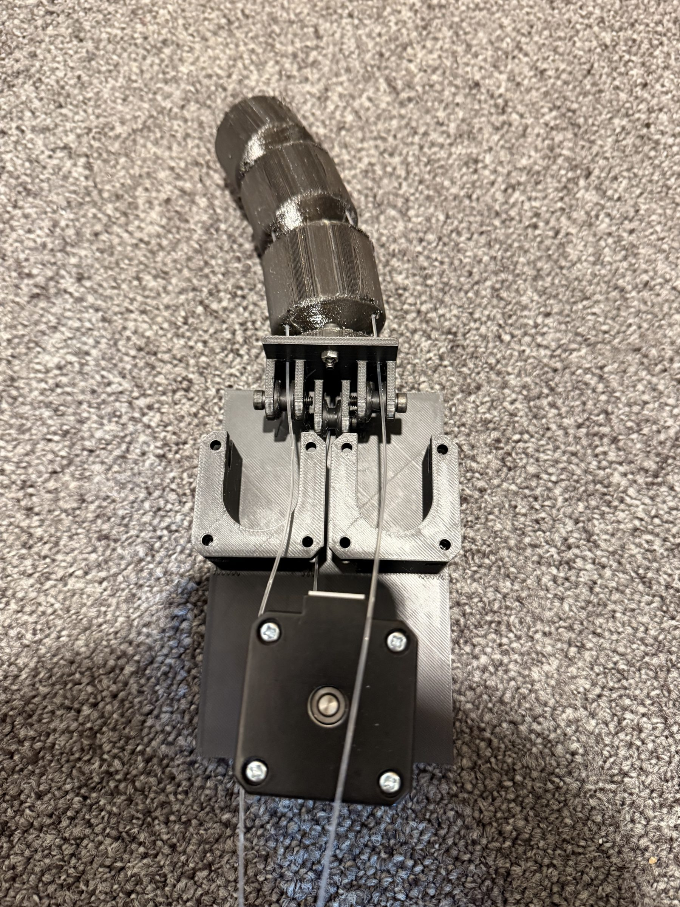

All projects
Robot Dog Tail
A removable servo-driven tail for the Unitree Go2 that expresses mood through parametric wag speed and amplitude, synchronised with the robot over ROS 2.
Mechatronics
ROS 2
Unitree Go2
Designed and built a robotic tail attachment for the Unitree Go2 quadruped robot to express its mood through motion patterns. The tail uses servo motors to generate wagging motions of varying speed and amplitude to indicate happiness, curiosity and other emotions. The attachment mounts to the Go2’s rear and interfaces with its control system via ROS 2, allowing behaviour to synchronise with the robot’s tasks and sensors.
Skills & Technologies
- Mechatronics
- ROS 2
- Servo Control
- Mechanical Design (CAD & 3D Printing)
Highlights
- Removable mount that fits the Go2's rear without modifying the original chassis.
- Servo‑driven tail with parametric speed / amplitude profiles for distinct mood states (happy, curious, alert).
- ROS 2 node subscribes to robot state and publishes tail commands so behaviour syncs with locomotion and perception events.
Gallery
